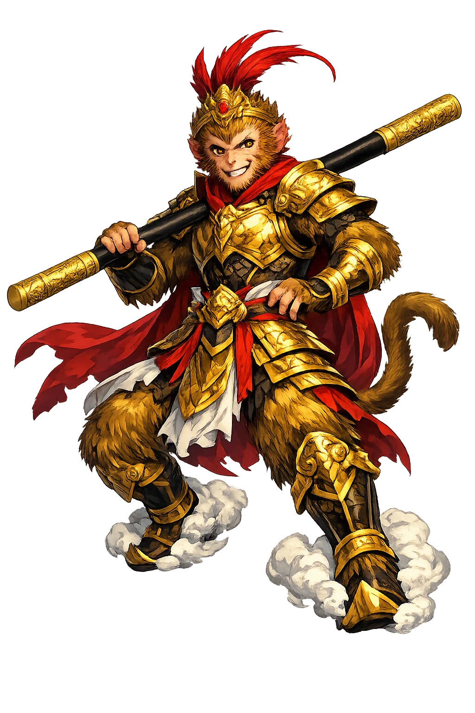
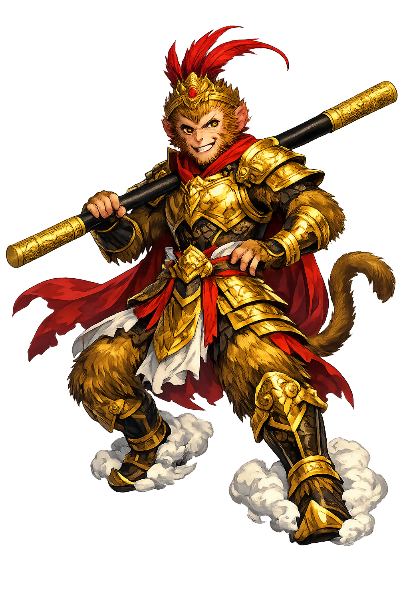

Stories of Sūnwùkōng
The Monkey King's story is China's great comic epic of self-mastery: born from a stone egg, tutored in the arts of immortality, at war with heaven itself — then bound to a monk and set on a road that turns the cosmic delinquent into a Buddha. Every age has read its own rebellion in him.
The novel opens at the beginning of its world-within-a-world: on the Mountain of Flowers and Fruit, an immortal stone egg, left over from the creation and nourished by the essence of sun, moon, heaven, and earth, one day splits in the wind. From it steps a stone monkey, who at once bows to the four directions — and the beams of light that shoot from his golden eyes startle the Jade Emperor on his distant throne (Journey to the West, ch. 1). The new-made monkey leads his tribe through the waterfall curtain into the Water-Curtain Cave, and the discovery wins him a crown: Handsome Monkey King. He is born twice over — from stone, and from the water's test — owing nothing to any parent, court, or god. The book's whole psychology is in that birth: the Monkey King is the self-made self, and heaven will spend a hundred chapters trying to make it answerable.
The first grief of the Monkey King's life is an old monkey's death, and it sends him on the novel's first quest: to learn the secret of escaping mortality. For eight or nine years he wanders — across seas, through markets, in the guise of a scholar — until he reaches Mount Lingtai and the cave of the Patriarch Subodhi, who takes him as a disciple, names him Wùkōng, "Awakened to Emptiness," and teaches him the two arts that will make him famous and impossible: the seventy-two transformations and the cloud-somersault, 108,000 li in a single flip (ch. 1–2). Even death cannot keep him. When the soul-snatchers of the underworld drag him down while he sleeps, he bullies the Ten Kings of Hell, seizes the Registers of Death, and strikes out his own name and every monkey’s in the tribe (ch. 3). The episode fixes his character forever — faced with the one law no creature escapes, his answer is not repentance but erasure.
Heaven's answer to an unmanageable genius is a job: the post of Bìmǎwēn, Protector of the Horses. When Wùkōng learns the title is stable-boy slang for a low groom, he storms out of heaven and appoints himself — with splendid insubordination — the Great Sage Equal to Heaven, the words carved on his banner (ch. 3–4). Heaven's armies cannot take him. He routs the celestial host until Erlang Shen's divine hound and Laozi's diamond snare bring him down; Laozi bakes him in the Eight-Trigram furnace for forty-nine days, which fails to kill him and instead forges his fiery golden eyes (ch. 6–7). The havoc myth made him the patron of every rebellious reader in Chinese history, and it is precisely structured: heaven's sin against him is not cruelty but condescension — and condescension, the novel says, is the one insult a true sage cannot survive.
At the height of the rebellion the Buddha makes a gentle, lethal offer: leap out of my right hand, and heaven is yours; fail, and return to the earth as a demon and repent. Wùkōng somersaults 108,000 li, finds five flesh-pink pillars he takes for the pillars of the world, writes his title on the middle one, and — to certify the journey — leaves a mark at its base. He leaps back, claims the throne, and the Buddha unclenches his hand: the pillars were his fingers, and the signature drips from them (ch. 7). For the wager he seals Wùkōng under Five Phases Mountain — iron pills when hungry, molten copper when thirsty — for five hundred years, until a passing monk is moved to lift the seal. The myth is the novel's hinge and its most quoted parable: the ego cannot imagine a container it did not measure. The universe, it turns out, is the one hand the monkey could not see.
The monk Tripitaka frees him from the mountain — and immediately binds him with the golden fillet and the headache spell, so that the most powerful creature in fiction must obey the most fragile of pilgrims (ch. 13–14). Thus conscripted, Wùkōng becomes the guardian of a journey through eighty-one tribulations: demons coveting the monk's flesh for its elixir-power, river-dragons and spider-spirits, false paradises and borrowed identities, drought demons and grieving kings — until the true scriptures are carried back from India and the pilgrims are ranked by merit (ch. 100). Wùkōng, the born rebel, receives the most martial of the Buddha's titles: Victorious Fighting Buddha (Dòuzhànshèngfó). The ending is the myth's quiet surprise. He is not defeated, disgraced, or tamed — he is employed. The cosmic delinquent did not leave the system; the system finally found the one job he was made for.
Monkey King, Chaos, Enlightenment
Sūnwùkōng, the Monkey King, is chaos with a crown: born from stone, armed from the sea floor, appointed Great Sage Equal to Heaven by his own proclamation, and finally harnessed as the guardian of the scripture pilgrimage — the untamed mind that Buddhism learned to employ.
Born from an immortal stone egg on the Mountain of Flowers and Fruit, nourished by sun, moon, and the essence of creation — a monkey owing nothing to any parent.
The Rúyì Jīngū Bàng, a 13,500-catty iron pillar that once pinned the seas; to the Monkey King it shrinks to a needle behind the ear and grows to a pillar that props up heaven.
Insulted with the stable-boy title Bìmǎwēn, he storms out of heaven, proclaims himself Qítiān Dàshèng, and defeats the celestial host until Laozi's furnace forges his fiery golden eyes.
Bound to the monk Tripitaka by the golden fillet and the headache spell, he fights through eighty-one tribulations and receives the most martial of the Buddha's titles at the journey's end.
From the original script to the living URL
孙悟空
The name in its original Chinese form. Sūnwùkōng (孙悟空) is attested in the source tradition — “Monkey awakened to emptiness”. Its macron-length vowels carry the full phonetic and orthographic weight of the source tradition.
sunwukong
Reduced to plain sunwukong, the name loses everything that made it specific: macron-length vowels. What remains is an ASCII string that machines can parse but that no longer speaks with its original voice.
Sūnwùkōng
The Unicode restoration recovers what ASCII flattened. Sūnwùkōng restores macron-length vowels, returning the name to its original written dignity. The domain encodes to Punycode, but the browser displays the truth.
Sūnwùkōng.com → xn--snwkng-kya78dji.com
The non-ASCII characters in Sūnwùkōng are encoded while the ASCII remains visible. To the DNS, it is Punycode. To humanity, it is Sūnwùkōng.
Owned, ideal, and ASCII forms of Sūnwùkōng
Sūnwùkōng
Restores 孙悟空. The live temple domain — sūnwùkōng.com.
sunwukong
Flattens 孙悟空. The plain ASCII fallback — what DNS and legacy systems see.
How Sūnwùkōng was spoken
How Sūnwùkōng is preserved in writing
A bespoke provenance study for Sūnwùkōng is being prepared by the PUNICODEX scholarly team.
Contribute scholarly provenance →Wùkōng is the mind itself, and every reader of the novel eventually notices the allegory hiding in plain sight. Chan literature had long called the restless spirit the "monkey of the mind" (xīnyuán) — the faculty that somersaults from thought to thought faster than any storm, sees through every disguise, and cannot sit still inside even the walls of heaven. The novel gives that monkey a body, a weapon, and a résumé, then asks the only question that matters: what finally disciplines him? Not the armies of heaven, not the furnace of Laozi, not five hundred years under a mountain. A vow — freely accepted, and administered by the weakest person on the road.
Enter Extended Lore